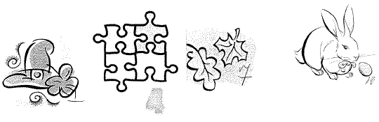

в архив,
в жизнь
Алиса в стране чудес
Во время праздника Миркес и я были чеширскими котами. Я мяукал, и беседовал с нарисованной
на стене голуюой гусеницей. На моем этапе надо было вспомнить известные фразы, обратные
к заданным. Например, на фразу ты забываешь обыденный век надо отвечать
я помню чудное мгновение. Из десяти фраз, которые нам подобрала Анечка Кукса,
я нашел восемь в Интернете.
- 10, 9, 8, 7, 6 ушел волк домой
1, 2, 3, 4, 5 вышел зайчик погулять
- Пятьдесят четыре — мужик огурец впервые
Сорок пять — баба ягодка опять
- Привет Израиль после бани
Прощай немытая Россия
- Тело лежит в Америке
Призрак бродит по Европе
- Гигант-отец покинул сына, но промолчал великан...
Крошка сын к отцу пришел, и спросила Кроха...
- Господа, прогоняют подруг
Дамы, приглашают кавалеров
- Приземляйтесь лужами, желтые дни
Взвейтесь кострами, синие ночи
- Некоторые жертвы могут догадаться, откуда прыгают ёжики
Каждый охотник желает знать, где сидит фазан
- Чёрт, убери демократов!
Боже, храни королеву!
В связи с тем, что я давал фразы последовательно, а Евгений Моисеевич разрешал пропускать
сложные фразы, у нас получились немного разные правила. Никто из тех, кто забегал
ко мне, за исключением Игоря Коваля, не смог ответить на исторический вопрос про
бродящего призрака и заработать более трех баллов. Так что мы с Миркесом придумали
повышающий коэффициент для команд, которые проходили через меня. За правильные ответы
я платил вот такие странные деньги.

наверх страницы